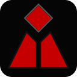

SKYNET SSO
Paramètres de l’extension Firefox
Un domaine par ligne. Les sous-domaines sont inclus automatiquement. Exemple : celjim.fr couvre cloud.celjim.fr.

Paramètres de l’extension Firefox
Un domaine par ligne. Les sous-domaines sont inclus automatiquement. Exemple : celjim.fr couvre cloud.celjim.fr.